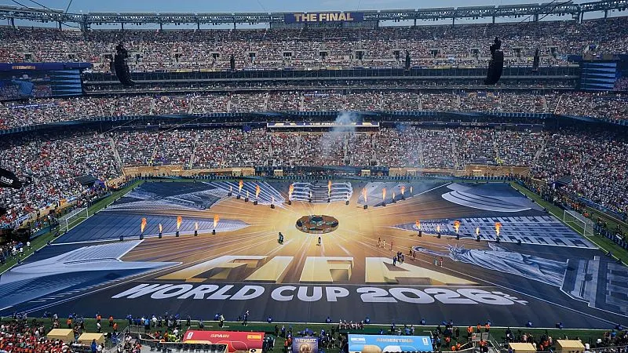
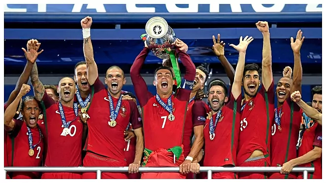
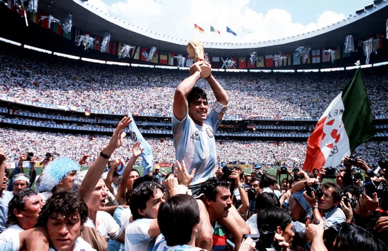
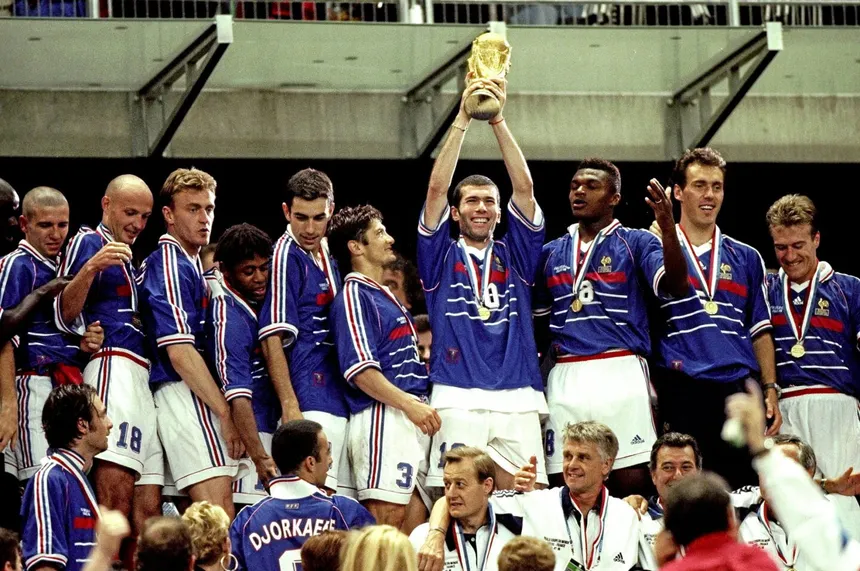

Lionel Messi 🇦🇷
La consagración en el Mundial de Qatar 2022.
Ver momento
Bienvenido a Mundial Players, un sitio dedicado a conocer información sobre jugadores de diferentes selecciones de fútbol.
Ver jugadoresReviví algunos de los momentos más históricos de las grandes leyendas del fútbol.
La consagración en el Mundial de Qatar 2022.
Ver momento
Portugal conquista la Eurocopa 2016.
Ver momento
El histórico Gol del Siglo en México 1986.
Ver momento
Sus dos goles en la final del Mundial 1998.
Ver momento